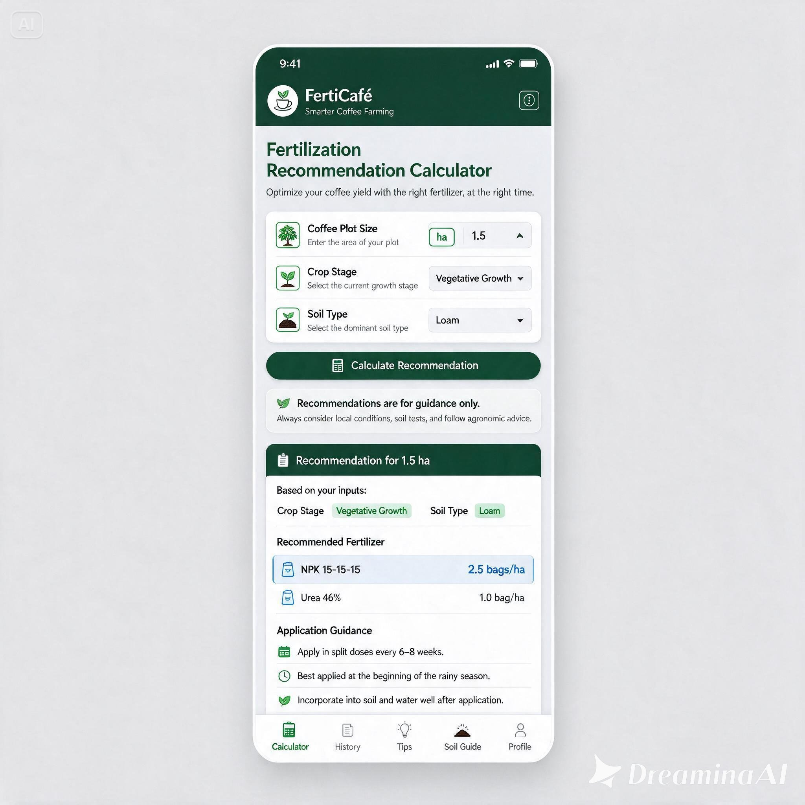
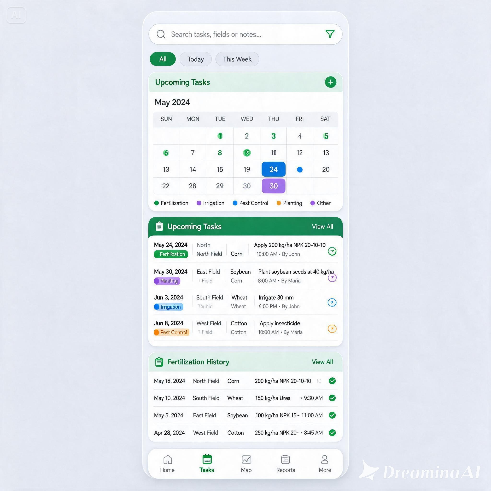
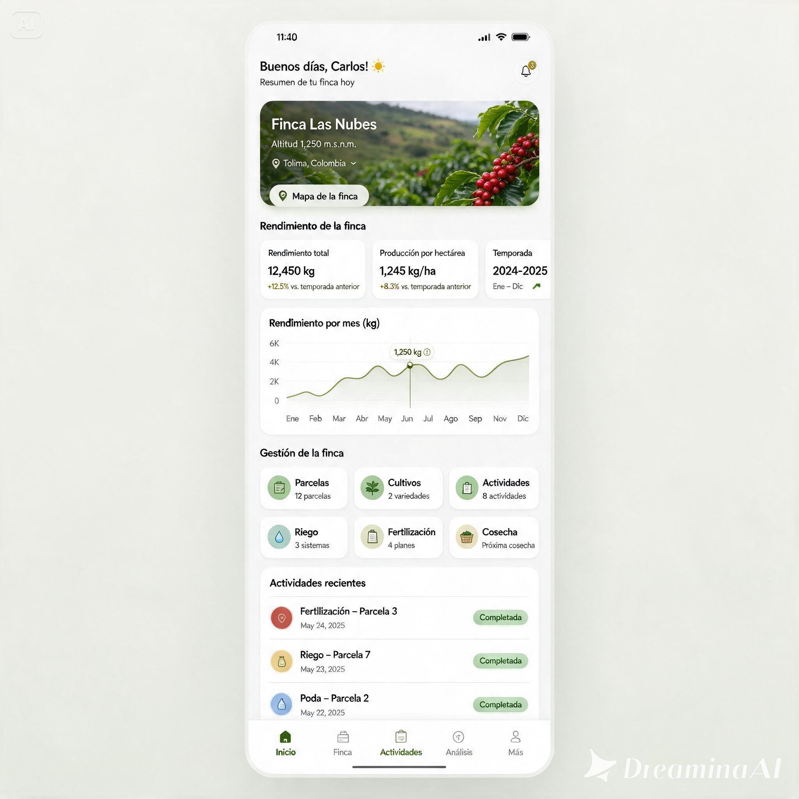

FertiCafé te dice cuánto y qué fertilizante aplicar, sin análisis de suelo.
Para el caficultor que no tiene análisis de suelo.

Para el caficultor que no tiene análisis de suelo.
"No sé cuánto fertilizante le debo poner a mis plantas porque no tengo análisis de suelo y no sé cuál abono me sale más barato."
Va a comprar fertilizante sin saber la cantidad exacta. Teme pasarse o quedarse corto.
Al elegir entre grados de abono compuesto, no sabe cuál le conviene. Se queda con la recomendación del vendedor.
Se le olvida cuándo debe fertilizar cada lote. Aplica fuera de tiempo o deja de hacerlo.
FertiCafé calcula la dosis exacta en gramos por planta y la cantidad de bultos de 50 kg necesarios.
Compara los costos de los grados compuestos y muestra cuál le sale más barato.
Genera un calendario de aplicaciones con recordatorios para cada lote.





[falta: resultados de las pruebas del grupo, cuántas se hicieron y cómo salieron]

FertiCafé: fertiliza sin análisis de suelo. (1/6)

Solo el 5% hace análisis de suelo. El resto fertiliza a ojo. (2/6)

¿Cuánto comprar? FertiCafé calcula gramos por planta y bultos de 50 kg. (3/6)

¿Cuál abono? Compara grados compuestos y muestra el más barato. (4/6)

¿Cuándo fertilizar? Calendario con recordatorios para cada lote. (5/6)

Escríbenos por WhatsApp y calcula el abono de tu lote. (6/6)
FertiCafé te dice cuánto y qué fertilizante aplicar, sin análisis de suelo.
En mi finca de San Lorenzo nunca tuve análisis de suelo. Fertilizaba a ojo o repetía lo del año pasado. FertiCafé calcula la dosis exacta en gramos por planta, los bultos de 50 kg y cuál grado sale más barato.
También te da un calendario con recordatorios para cada lote.
Escríbeme por WhatsApp y pruébalo en tu finca.
#FertiCafé #CaféDeNariño #Fertilización #Caficultura #SanLorenzoNariño
Calcula la dosis, elige el abono más barato y no olvides cuándo fertilizar.
Escribir por WhatsApp